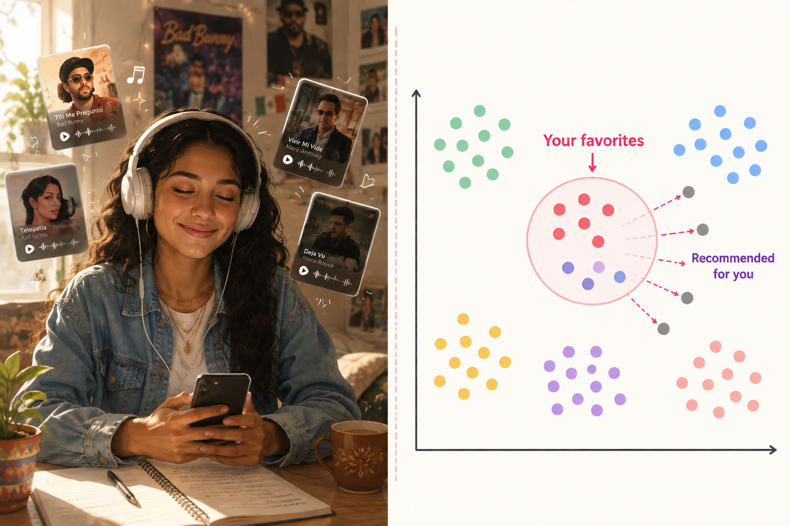
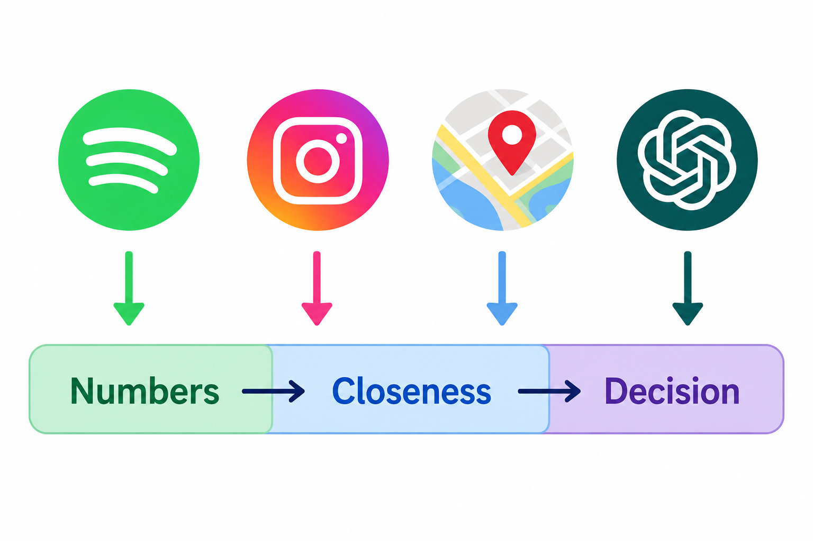
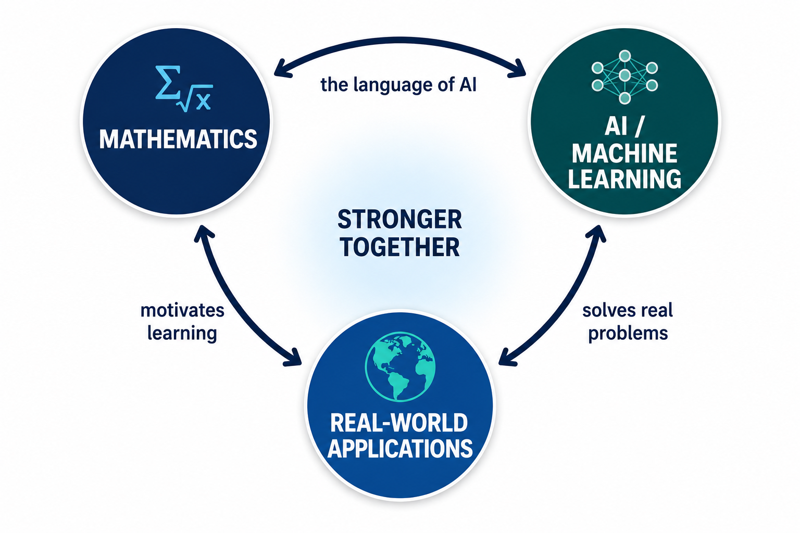
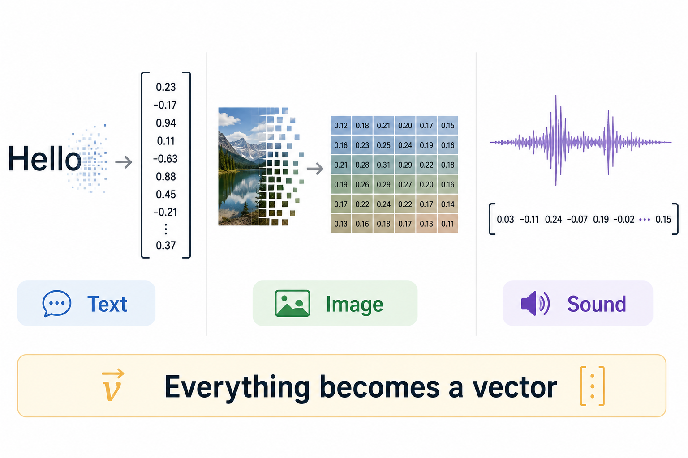
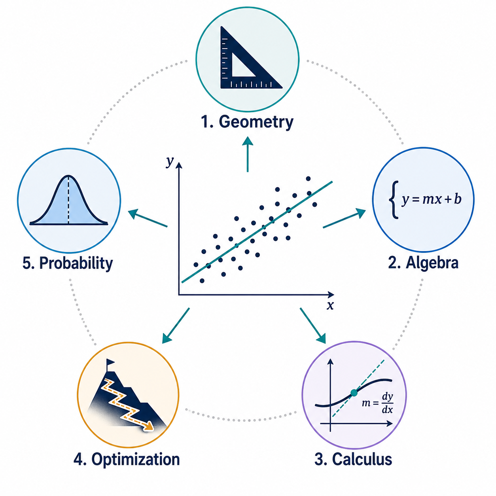

Understanding why this works. Knowing what to change when it doesn't.
Which person is harder to replace — the one who calls the function, or the one who understands it?
You used AI today — probably more than once
Think about your morning:
You asked ChatGPT to help you write an email.
Instagram showed you exactly the posts you'd like.
Google Maps found you the fastest route to campus.
Spotify played a song you've never heard — and you loved it.
These apps are not magic. They are math.
So how does Spotify know what song you want?

Imagine you listen to a lot of Taylor Swift and Adele.
Spotify turns each song into a list of numbers: tempo, energy, mood, ...
Your favorites cluster together — they're "nearby" in number-space.
Spotify finds OTHER songs that are "nearby" your cluster.
It plays those. You like them. It feels like mind-reading.
No mind-reading. Just three steps: turn things into numbers, measure closeness, pick the closest.
The same trick powers everything

App
Step 1: Numbers
Step 2: Closeness
Step 3: Decision
Spotify
Song features
Similar songs
Play recommendation
Instagram
Post features
Similar to your likes
Show in feed
Google Maps
Road segments
Shortest distance
Best route
ChatGPT
Word meanings
Most related context
Next word
Four completely different apps. One pattern: numbers → closeness → decision.
This pattern IS the math we're learning. By the end of this course, you'll understand how each column works.
Math, AI, and the real world: a triangle

Math → AI: Math is the language that AI speaks. Without it, AI is a black box.
AI → Real World: AI uses math to solve real problems you care about.
Real World → Math: Real problems show us why math matters.
This course lives in the middle. We learn math through AI, and understand AI through math.
Our guiding question
You use ChatGPT every day. But have you ever wondered:
When you type a sentence and ChatGPT writes back... what is actually happening inside the machine?
It's not thinking. It's not understanding. It doesn't have a brain.
It's doing arithmetic. Very simple arithmetic, repeated billions of times.
Today, I'm going to show you exactly what arithmetic it's doing.
ChatGPT plays one game: fill in the blank
When you type "The cat sat on the ___", ChatGPT's entire job is to guess the next word.
It looks at all the words before the blank.
It asks: "Based on these words, what word is most likely next?"
That's literally all it does. It fills in one blank. Then the sentence is longer, so it fills in the NEXT blank. Then the NEXT. One word at a time.
But how? Four steps of arithmetic.
"The cat sat on the ___"
Turn every word into a list of numbers. ("cat" → some numbers, ...)
For each word, ask: how related is it to the blank? (Score each word.)
Turn the scores into percentages. (cat 51%, sat 31%, on 11%, the 7%.)
Mix the words' information using those percentages → predict "mat".
That's it. Four steps. Each step is a math concept we'll learn.
Step 1: How do you turn "cat" into numbers?
A computer can't read. So we give every word a report card:
Think of it like a report card for the word.
Each number measures one quality: how "animal-like"? How "action-like"?
Word
Animal score
Action score
cat
4
1
dog
4.5
2
run
0
5
democracy
0
0
"cat" becomes \((4, 1)\). "dog" becomes \((4.5, 2)\). Now we can do math with words!
"Turning things into numbers" is the foundational idea of AI. In math, a list of numbers is called a vector. (Unit 1)
Why does this matter for AI?

Without this step, AI cannot function. Period.
Can't turn words into numbers → cannot process language.
Can't turn images into numbers → cannot see.
Can't turn songs into numbers → cannot recommend music.
Math (vectors) enables AI (word processing), which powers your Real World (ChatGPT).
And wanting to understand ChatGPT motivates you to learn Math (vectors). The triangle in action.
Step 2: Measuring closeness with the dot product
Given two lists of numbers, multiply matching entries and add up:
Without scaling: essentially 100% on ONE word. Can only "look at" one thing.
With scaling: spreads attention across several words. Much better.
Like a student who reads one chapter vs. several — the second understands better.
Each piece = one unit of the course
Formula piece
What it does
Math concept
When
Words → numbers
Represent data
Vectors
Week 1
\(QK^\top\)
Measure similarity
Dot product
Week 1
\(\div\sqrt{d_k}\)
Keep scores reasonable
Norms
Week 1
softmax
Scores → percentages
Probability
Week 12
\(\cdot\; V\)
Weighted average
Linear combination
Wk 1–2
Learn \(W\)
Improve by adjusting
Gradient descent
Wk 5–10
This table IS the course. Remove any row and AI breaks.
One problem, five ways

We'll solve the same problem five times: fit a line to data.
Geometry (Wk 2): drop a perpendicular.
Algebra (Wk 3): solve a system of equations.
Calculus (Wk 5): find where the error slope is zero.
Optimization (Wk 8): start anywhere, walk downhill.
Probability (Wk 13): find the line that best explains randomness.
Five approaches, same answer every time. Each teaches something the others can't.
The final project: YOU explain AI
Label every piece of the attention formula with its math concept.
Compute a tiny attention example by hand (3 words, 2 numbers each).
Verify your calculation in Python.
Record a 10–15 minute video explaining attention to someone who hasn't taken this course.
If you can explain this formula to a friend, you've learned the math — and you'll understand AI better than most college students, even from CS and engineering.
What a typical week looks like
Step
When
Time
What you do
Preview
Before class
15 min
Read 3–5 pages, answer 3 questions
Lecture
In class
75 min
WHY → example → definition → practice
Lab
Biweekly
30 min
Verify math with Python (Colab)
Homework
Due Sunday
2 hrs
Calculate → Verify → Interpret
The pattern: understand WHY first, do the math second, explain what it means third.
How you're evaluated
Component
Weight
What it tests
Preview checks
10%
Did you prepare?
Homework (CVI)
25%
Can you do the math and explain it?
Labs (Colab)
10%
Can you connect math to code?
4 Quizzes
15%
Do you know the key ideas?
Final Project
20%
Can you connect everything to AI?
Final Exam
20%
Can you work independently?
No hidden topics. No trick questions. If you do the homework, you can do the exams.
About AI tools
You may use ChatGPT, Claude, etc. for learning.
But:
You must be able to redo the calculation by hand.
You must be able to explain why the answer is what it is.
If you can't → the AI replaced your learning, not helped it.
Use AI as a tutor ("explain this to me"), not a ghostwriter ("do problem 3").
What I expect / what you can expect
From you:
Preview before every class (15 min).
Attempt every homework honestly.
Ask questions — post on Canvas first so everyone benefits.
Come to office hours (ST F315) or book a Zoom appointment.
From me:
Example before every definition.
Every formula connects to AI.
Fair, transparent grading.
Exactly what to study for exams.
My promise: this course is designed for you to learn, not to weed you out.